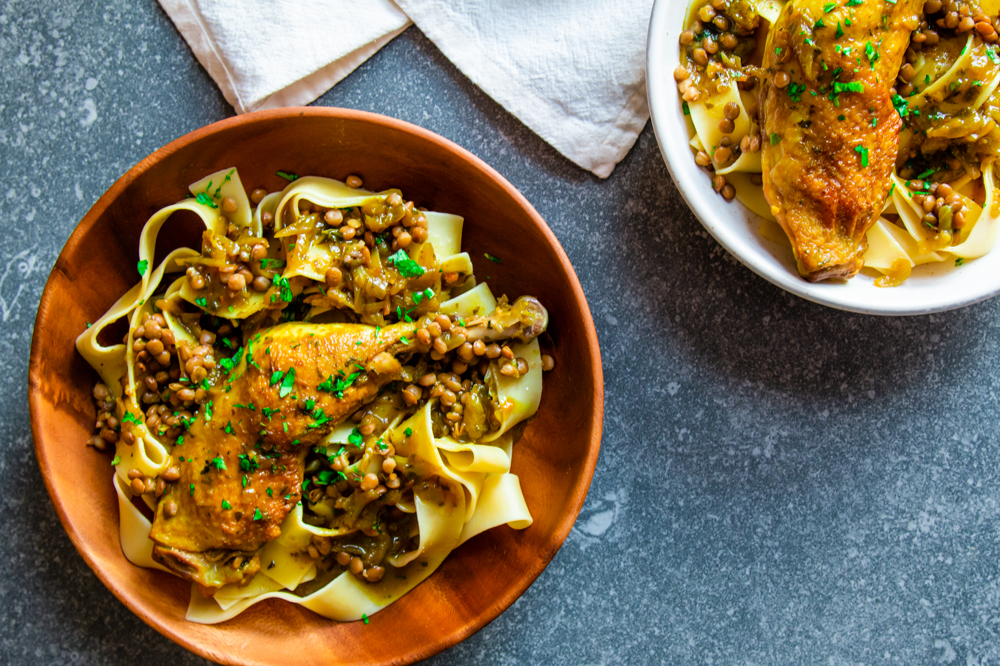

You can discover some Moroccan Recipes in the list below
ras el hanout

rfissa

You can discover All Moroccan Recipes Right Here
The history of Moroccan cuisine is as sophisticated and diverse as its aromas and flavours. The foods which Marrakech (and Morocco) are renowned for are the culmination of centuries of trade and cultural amalgamation.
Of course, the history associated with Moroccan cuisine has also shaped the way its people eat their favourite meals, along with when and why they eat what they do. Here’s a more detailed look at its origins.
The Moroccan food menu that the world is accustomed to began with the Berbers who were once the dominant ethnic group in the region. In fact, the Berbers inhabited the region over 2,000 years ago. Their food staples consisted of local ingredients including olives, figs, and dates to prepare lamb and poultry stews – ingredients that are still heavily used today.